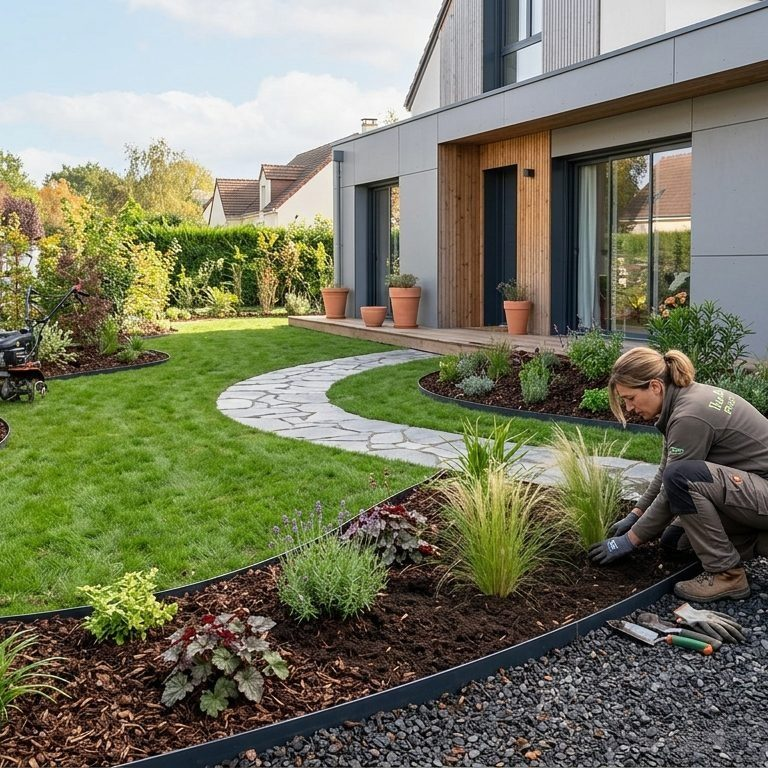
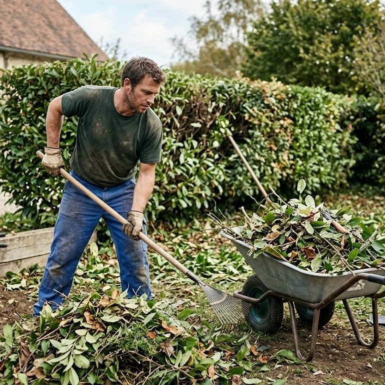

Paysagiste à Maurepas (78)
Votre jardin, pensé et entretenu avec soin
NL PAYSAGE aménage et entretient jardins et espaces verts à Maurepas. Contactez-nous pour parler de votre projet.
- 78 Yvelines
- Devis sur demande
- Maurepas Maurepas et alentours
Nos prestations
Des services pour créer et entretenir votre jardin
De la création à l'entretien, retrouvez les principales prestations proposées.
À propos
Un jardin agréable à vivre, au quotidien.
NL PAYSAGE est une entreprise d'aménagement paysager dirigée par Noé Lacheny, installée à Maurepas dans les Yvelines.
Un second paragraphe.
Noé Lacheny, dirigeant


Contact
Un projet de jardin ? Parlons-en.
Contactez NL PAYSAGE pour parler de votre projet de jardin.
Maurepas (78)